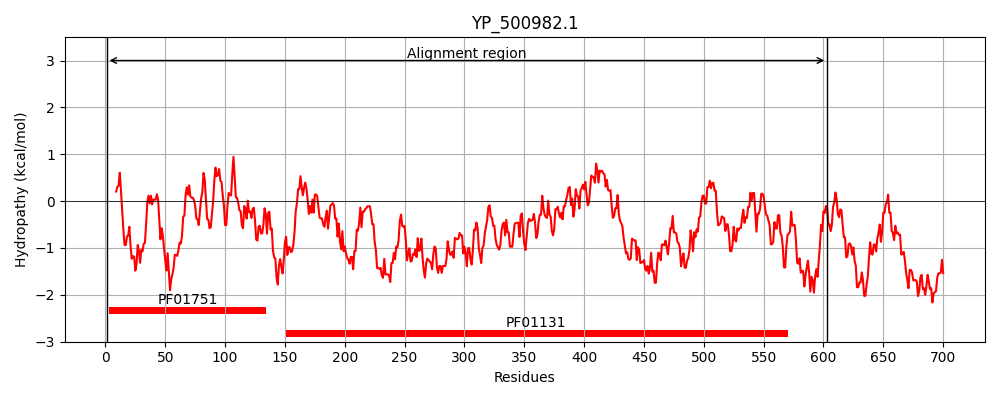
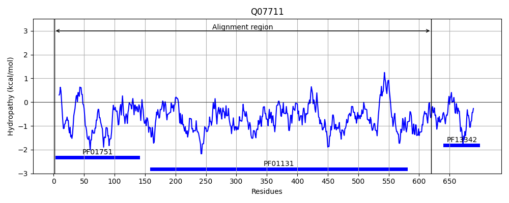
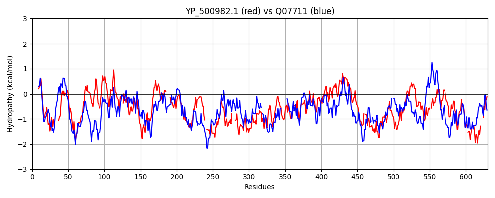

Hit Accession: Q07711
Hit TCID: 3.A.7.7.1
Hit Description: gnl|BL_ORD_ID|12290 gnl|TC-DB|Q07711|3.A.7.7.1 DNA topoisomerase I (EC 5.99.1.2) (Omega-protein) (Relaxing enzyme) (Untwisting enzyme) (Swivelase) - Staphylococcus aureus.
Mach Len: 630
e:0.000000
Query TMS Count : 0
Hit TMS Count: 0
TMS-Overlap Score: 0.000000
Predicted Substrates:CHEBI:4291;deoxyribonucleic acid
BLAST Alignment:
Score: 800 , Bit scores: 312 bits, E-value: 2.1e-96, Alignment length: 630, Percentage identity: 33
Query: 1 MKSLILAEKPSVARDIADALQINQKRNGYFE------NNQYIVTWALGHLVTNATPEQYDKNLKEWRLEDLPIIPKYMKTVVIGKTSKQFKTVKALILDNKVKDIIIATDAGREGELVARLILD--KVGNKKPIRRLWISSVTKKAIQQGFKNLKDGRQYNDLYYAALARSEADWIVGINATRALT-----TKYDAQLSLGRVQTPTIQLVNTRQQEINQFKPQQYFTLSLTVKGFDFQL--ESNQRYTNKETLEQMVNNLKNVDGKIKSVATKHKK----SYPQSLYNLTDLQQDMYRRYKIGPKETLNTLQSLYERHKVVTYPRTDSNYLTTDMVDTMKERIQVTMATTYKDQARPLMSKTFSSKMSIFNNQKVSDHHAIIPTEVRPVMSDLSNRELKLYDMIVERFLEALMPPHEYDAITVTLEVAGHTFVLKENVTTVLGFKSIRQGESITEMQQP-FSEGDEVKISKTNIREHETTPPEYFNEGSLLKAMENPQNFIQLKDKKYAQTLKQTGGIGTVATRADIIDKLFNMNAIESRDGKIKVTSKG-KQILELAPEELTSPLLTAQWEEKLLLIERGKYQAKTFINEMKDFTKDVVN-GIKNSD--RKYKHDNLTT---TECPTC 603
M +LIL EKPS A D++ +K+NGY E N +TWA+GHLV P++YD+ K + + + + V KT QF +K + +NK+ ++IIATD REGE +A IL+ KV +K I+RLW++S + +I++ FKN+ + Y AR +DW+VGIN +R T D + +GRV +PT+ +V R+ I FK ++++ +S T+ + ++ E ++ +++ L + + D K + T +K + P Y+L+ LQ+DM +YKI K TL Q+LYE+ K++TYPRTDS Y+T D + + E I Y + + + S+ N K+ DH+AI+ T DL E+ +Y I++ M +Y+ T+ + V F +K + GFK++ + +E P F + +EV I + ++ E ETTPP+ + E +LLKAM NP L+D+ TLK+ G+GT ATRADII+ L I+ + KI +T G L L L+ P LT QWE+ L I +G+ +FIN + + K +N +KN + +K + ++T +CP C
Sbjct: 1 MNTLILCEKPSQAMDLSTVFAKKKKQNGYMEISDEQLNVSGFLTWAVGHLVELKEPQEYDEKYKNFSTYPILLEKDDFQFKVSDKTKDQFNNIKKIFKENKIDEVIIATDPAREGENIAYKILNQLKVTDKVTIKRLWLTSKVESSIRKAFKNILPKEKTYGFYKEGRARELSDWLVGINLSRHFTKISRELGNDGVIHIGRVSSPTLNMVYNRENNIKGFKGKKFYKVSATINKDEQEVKTELKNKFDSEDELHEFLFENDITDLTQKGLVTDIEKEIGYTMPPKFYDLSALQEDMNDKYKISAKRTLEIAQTLYEK-KLITYPRTDSRYITEDEKEMLLENID------YLKEITKINLNNELTNNSLINPSKIEDHYAILITGNDFNKVDLKEEEINVYKSILQNVAMNFMDKEQYETTTIEIAVKKLMFEVKGKIIQDNGFKALLNKQKTSEETIPNFEKNEEVDI-ELDLLEKETTPPKRYTEKTLLKAMANP--IETLEDEGLKSTLKEVKGLGTPATRADIIENLKKNKYIQVQKNKIYITKNGILACLLLEGHLLSKPDLTGQWEKYLNGISKGEKDDDSFINTINEMIKKTINEEVKNKESIQKVAKEKVSTNNIAKCPAC 620 | Protein Hydropathy Plots: |
|---|
|  |  |
Pairwise Alignment-Hydropathy Plot:
|
|---|
|  |